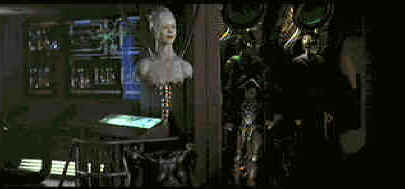

Paramount/1997/111m/ANA 2.35
Star Trek: First Contact’s terrific opening sequence begins on Captain Jean-Luc Picard’s eye and pulls back ever wider, expanding into the monumental Borg ship. Picard turns to a relative insignificant dust particle irritating the specter of Borg domination. The beautiful sequence is a reflection of the special effects work, technically the most sophisticated in the Star Trek body of work. While the maiden solo voyage on film for the crew of the Star Trek: The Next Generation may be a mixed bag, the action on the ship is consistently solid as directed by first-timer Jonathan Frakes with energy to spare.
The plot is woven on the thin strands of time warps and apocalyptic visions. The simple and direct confrontation as the Borg challenge the Enterprise crew for control of their ship is well executed, but it is barely enough material for a fifty minute television episode. And whereas the Borg invasion of the Earth and the battle for the Enterprise are linked, it’s a big stretch for the concurrent plots to merge coherently.
The Borg, a cybernetic race of ferocious assimilators, are out to replace humankind with their own special brand of man/machine. Seeking their own version of perfection, the Borg march a relentless path toward total assimilation. The Borg do not kill their enemies. They transform them. The Borg are prime enemies to challenge for Enterprise Captain Picard and crew. The attempt to alternate between silly comedy in the Earth scenes and intense action as the Borg coldly fight their way through the many levels of the Enterprise fails unequivocally.
 |
Joining The Borg. ©Paramount |
Tone is a
problem in this Star Trek. The Earth sequences fail to capture the innocence of the
original Star Trek shows. The filmmakers don’t seem to have a handle on charm. Their
attempts border on crudity. The character of Cochrane, legendary space figure who made
"first contact" possible by his timely flight is simply all wrong. The pioneer
is painted in the broadest cartoon strokes.
The biggest surprise of this Star Trek is Patrick Stewart as
Captain Jean-Luc Picard. In Generations, Stewart was a cold fish(Maybe he should have been
in Star Trek IV with the whales.). He failed to create a sympathetic character in Picard.
This trek is a different story. Stewart finds the character in Picard’s vulnerability
making his captain a complex leader. Director Jonathan Frakes plays Commander William
Frakes blandly and LeVar Burton stares through telescopic eyes ponderously. James
Cromwell(The wonderful farmer in Babe)plays Earth legend Zephram Cochrane like he’s
still in the barnyard and Alfre Woodard seems out of place as his faithful concubine Lily
Sloane.
Star Trek: First Contact is a thoroughly professional voyage.
Cinematography by Matthew F. Leonetti moves elegantly through an interesting array of
lighting. Jerry Goldsmith delivers a typically strong score despite difficulty in finding
adequate drama from which to milk his musical power. The make-up work is truly outstanding
and combines seamlessly with the special effects. When we are first introduced to the Borg
in her bifurcated feminine incarnation, the joining of Borg top and bottom is a beautiful
sensual moment. Even the standard Data look is enhanced with some Frankenstein skin
grafts. The Borg creatures have wonderful mechanically organic embellishments.
Given the advantage filmmakers now have to realize their most
fantastic visions on the screen through modern digital effects, it would seem almost
Spockian in its logic that better Star Trek movies should be the result. There seems to be
too much reliance on the special effects and less consideration to thorough story
construction. The shabby scripting of today’s blockbuster, The Lost World, makes Star
Trek: First Contact look grand by comparison. Yet, if we accept less skilled writing as
the norm, rest assured, that’s what we’ll get. Maybe we need a movement to rebel
against mediocrity in the movies. You gotta start somewhere.
Amongst the first of Paramount's DVD releases, Star Trek:First
Contact is an outstanding effort. The anamorphic transfer sparkles. Images are
three-dimensional. Contrast range provides an excellent balance of light output presenting
details with consistent ease. Deep space is dark indeed. Tightly controlled colors are
vital and accurate. The Dolby 5:1 surround is simply reference material. General ambient
detail is richly spread throughout the channels. Dialogue is balanced perfectly in every
circumstance and the Goldsmith score soars with the Enterprise. Bass extension is
full-throated. Paramount's maiden DVD voyage is a complete success.